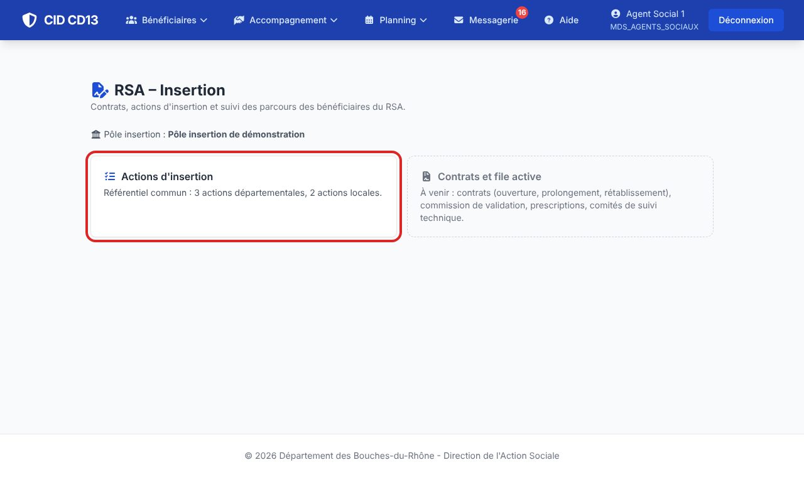
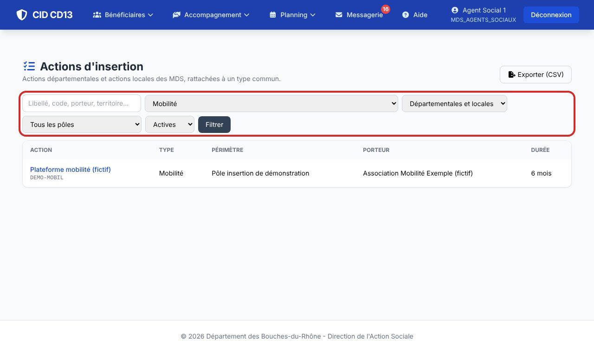
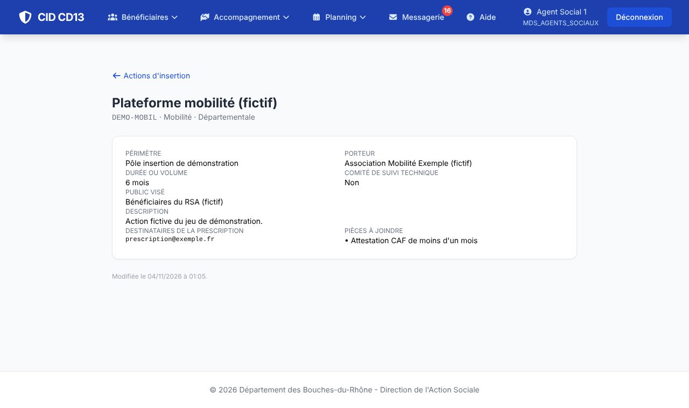

1Ouvrir le référentiel

- Menu Accompagnement → RSA – Insertion, puis Actions d'insertion.
- Les agents d'un pôle insertion voient aussi le pôle auquel ils appartiennent.
2Chercher une action

- Tapez un mot (libellé, code, porteur, commune) ou choisissez un type d'action (mobilité, santé, garde d'enfants…).
- Niveau : actions départementales ou locales (MDS) ; pôle : actions d'un pôle insertion ; état : actives, inactives ou toutes.
- Les actions locales sont signalées par l'étiquette locale.
3Lire la fiche d'une action

- Cliquez sur l'action : périmètre, porteur, durée, public visé, destinataires de la prescription, pièces à joindre, passage en comité de suivi technique.
Bon à savoir
- Les actions départementales sont visibles de tous ; les actions locales, des agents de la MDS et du pôle insertion qui la couvre.
- Une action qui s'arrête passe inactive : elle n'est jamais supprimée (l'historique des parcours reste lisible).
Et ensuite ?
Cliquez sur une image pour l'agrandir. Le cadre rouge montre où cliquer ou quoi remplir. Toutes les données affichées sont fictives.